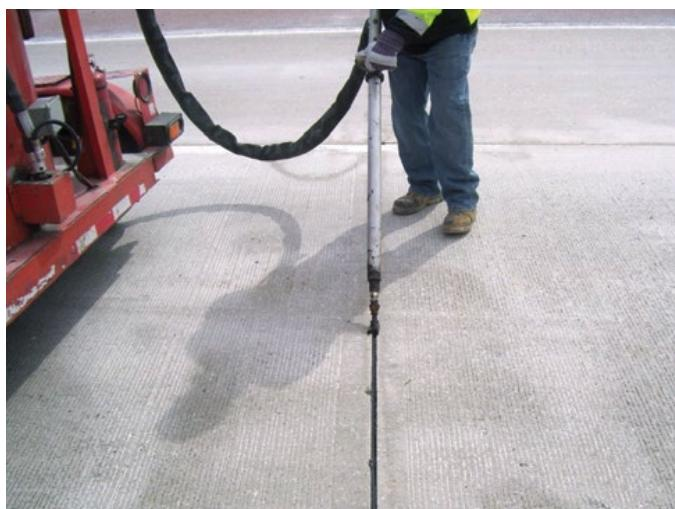
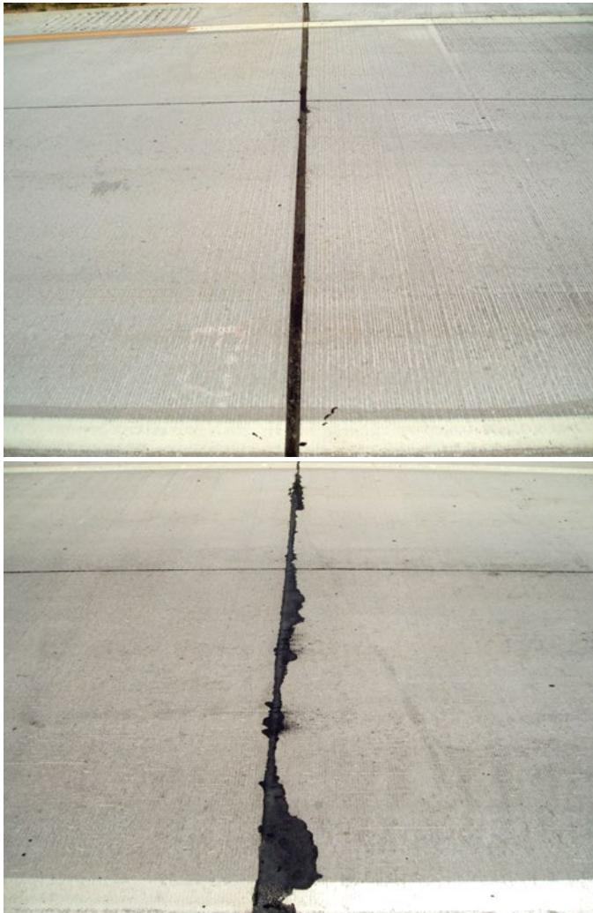

Joint Maintenance
Joint maintenance is a systematic program of inspecting, cleaning, sealing, and resealing pavement joints to preserve the structural integrity of the slab system. The primary objective is to create a durable barrier that limits the entry of water, de-icing chemicals, and incompressible debris into the joint structure [1]. By maintaining effective seals and drainage, this practice prevents moisture-related distresses such as pumping, faulting, freeze-thaw damage, and premature deterioration of the concrete edges [2] [4]. Proper maintenance also ensures that joints retain their functional capacity to accommodate movements caused by temperature fluctuations and traffic loads without inducing internal stresses or unwanted compression between adjacent slabs [3] [4].
Sources (4)
Key findings
- Observed that sealant service life varies significantly by type, ranging from about ten years for silicone products to more than twenty years for hot-applied materials [1] [2].
- Identified that joint maintenance is critical for pavement durability because a substantial portion (65–80%) of surface water enters the pavement through longitudinal joints or cracks [2].
- Recommended controlling joint geometry by using narrow, single-cut transverse joints and cutting interior contraction joints to a depth equal to one-third of the slab thickness [1].
- Found that resealing design should prioritize an appropriate joint shape factor rather than widening the joint, as excessive widening increases material use and can cause tire-slap [1].
- Specified that longitudinal concrete-to-concrete joints are very narrow (~0.25 in) and sealed without a backer rod, whereas concrete-to-HMA shoulder joints require larger reservoirs (0.75–1 in square) [1].
- Advised incorporating a drainable base beneath joints to allow water to escape and mitigate reliance on sealants alone [2].
Joint Construction and Maintenance Practices
Joint construction and maintenance practices focus on preserving pavement integrity by managing water infiltration, which is the primary cause of concrete deterioration [2]. Proper joint activation during construction ensures that shrinkage and thermal stresses result in controlled cracking along weakened planes rather than random fractures [3]. Maintenance involves regular inspection, cleaning, and resealing to create a durable barrier against moisture, chemicals, and debris while accommodating structural movements [1] [2] [4].
The following figure illustrates corner cracking in jointed concrete pavement.
 Corner cracking in jointed concrete pavement [4]
Corner cracking in jointed concrete pavement [4]
The image displays a section of rigid pavement where intersecting joints form a slab corner that exhibits severe structural distress. Visible cracks radiate from the intersection, creating a broken pattern consistent with load-related cracking caused by reduced edge support or voids under the slab corners.
Research problem — Inadequate construction practices for curing, sawing, and sealing create vulnerabilities that lead to premature joint deterioration and sealant failure [2]. Poor timing in the application of curing protection or joint sawing increases the risk of early-age cracking, which prevents contraction joints from functioning as intended [3]. Insufficient joint movement and improper sealing allow water and debris to infiltrate the pavement structure, causing spalling, reduced load-bearing capacity, and accelerated structural degradation [1] [4].
The following figure illustrates the physical manifestations of these failures, specifically concrete pavement joint spalling and blowup.
 Examples of joint sealant failures: missing and debonded sealant (left) and incompressible materials in joint (right) [1]
Examples of joint sealant failures: missing and debonded sealant (left) and incompressible materials in joint (right) [1]
The figure displays two examples of concrete pavement joints exhibiting distinct types of deterioration. The left image shows a joint with missing and debonded sealant, while the right image depicts a joint filled with incompressible materials.
State of the art — Current joint maintenance practice centers on a systematic workflow that begins with the removal of degraded sealant, precise refacing to create a clean reservoir, and thorough cleaning via high-pressure water or abrasive blasting before installing new backer rods and sealants [1]. The industry has shifted toward using high-performance silicone or hot-applied sealants with documented service lives of ten to over twenty years, alongside emerging materials like SME-PS absorbers that offer improved flexibility during thermal cycles [1] [2]. Construction-stage control remains critical, with practitioners relying on maturity meters and embedded resistivity sensors to optimize saw-cutting timing, while long-term field data supports the adoption of silane-based surface sealers for their ability to extend protective service life significantly beyond traditional intervals [2] [3].
The following figure illustrates an expansion joint detail featuring a backer rod installed to ensure proper joint shape factor.
 Detail of an expansion joint showing the installation of a backer rod and formed-in-place sealant. [1]
Detail of an expansion joint showing the installation of a backer rod and formed-in-place sealant. [1]
The figure displays a cross-section of a concrete pavement joint where preformed filler material has been removed to create a reservoir for maintenance materials. A cylindrical backer rod is installed at the bottom of this reservoir, and a formed-in-place sealant is applied above it to fill the remaining space.
Findings from the reports
- Observed that sealant service life varies significantly by type, ranging from about ten years for silicone products to more than twenty years for hot-applied materials [1] [2].
- Identified that joint maintenance is critical for pavement durability because a substantial portion (65–80%) of surface water enters the pavement through longitudinal joints or cracks [2].
- Recommended controlling joint geometry by using narrow, single-cut transverse joints and cutting interior contraction joints to a depth equal to one-third of the slab thickness [1].
- Found that resealing design should prioritize an appropriate joint shape factor rather than widening the joint, as excessive widening increases material use and can cause tire-slap [1].
- Specified that longitudinal concrete-to-concrete joints are very narrow (~0.25 in) and sealed without a backer rod, whereas concrete-to-HMA shoulder joints require larger reservoirs (0.75–1 in square) [1].
- Advised incorporating a drainable base beneath joints to allow water to escape and mitigate reliance on sealants alone [2].
Novelty & rigor — The approach introduces a soy-methyl-ester based polystyrene sealant that remains flexible during freezing to prevent thermal cracking, paired with a structured monitoring framework using video documentation and periodic core sampling [2]. Distinctive innovations include coupling sensor-based readiness detection with predictive risk assessment for scheduling, linking joint geometry directly to slab thickness via an engineered shape factor, and utilizing a single saw operation to remove old sealant and reface the joint simultaneously [1] [3].
Reported values
| Parameter | Value | Context | Source |
|---|---|---|---|
| crack width for sealing | 0.12 in. | minimum crack width generally sealed | [1] |
| crack width for sealing | 0.5 in. | maximum crack width for effective sealing with minimal spalling/faulting | [1] |
| joint widening limit | 0.08 in. | total during refacing operation | [1] |
| longitudinal joint width | 0.25 in. | concrete-to-concrete joints | [1] |
| reservoir dimension | 0.75 in. by 0.75 in. | longitudinal concrete mainline–HMA shoulder joint | [1] |
| reservoir dimension | 1 in. by 1 in. | longitudinal concrete mainline–HMA shoulder joint | [1] |
| reservoir dimension range | 0.75 by 0.75 in. | common reservoir dimensions | [1] |
| reservoir dimension range | 1 by 1 in. | common reservoir dimensions | [1] |
| sealant failure threshold | 25% to 50% | length of sealant failed to perform primary functions | [1] |
| silicone sealant service life | 10 years | primarily silicone sealants | [1] |
| silicone sealant service life | 12 and 16 years | several silicone sealants | [1] |
| silicone/hot-applied sealant service life | more than 20 years | both silicone and hot‑applied sealants | [1] |
| sealer failure proportion | close to 50 percent | of the sealers had failed | [2] |
| silane-based surface sealer failure threshold | 12 years | no silane-based surface sealer failed before | [2] |
| water ingress proportion | 65 to 80 percent | water that enters a pavement from the surface through longitudinal joints or cracks | [2] |
1 more distinct value omitted here; the full span-verified set is in the quantities sidecar.
Across the reviewed reports, successful joint maintenance relies on precise geometric control and material selection, with both sources emphasizing narrow, single-cut joints that do not protrude above the pavement surface to ensure proper sealant function. While report highlights the critical role of joint geometry in preventing water ingress through longitudinal joints and cracks, report specifies that transverse joints should be cut to a depth equal to one-third of slab thickness and sealed based on an appropriate shape factor rather than excessive widening. Both reports converge on the necessity of removing failed sealant and preparing the joint reservoir before resealing, with report detailing a sequence that includes cleaning and backer rod installation, while report notes that severe damage requires stripping the joint completely to mitigate water ingress. [1] [2]
The figure below illustrates the proper technique for backer rod insertion using a handheld roller.

A worker uses a handheld tool to install backer rod into a concrete pavement joint. [1]The image shows a construction worker standing on a concrete surface, using a long-handled roller tool to press a black cylindrical material into a narrow longitudinal crack in the slab. This activity represents the installation of backer rod, which is a critical step in joint maintenance that prepares the reservoir for sealant application and ensures proper depth control.
Implications — Joint maintenance must be integrated into design, installation, and ongoing service plans rather than treated as an afterthought [2]. Successful joint maintenance depends on strict adherence to proven design, preparation, and timing practices [1]. Sealants require regular inspection and prompt resealing because they are not a permanent solution [2].
The figure below illustrates the proper application of silicone sealant, highlighting the critical installation step that requires regular inspection and prompt resealing.

Comparison of a clean expansion joint and one with deteriorated sealant. [1]The figure displays two views of concrete pavement joints, contrasting a narrow, open gap in the top image with a wider crack filled with black material in the bottom image.
Limitations — Reliance on sealants alone is risky due to frequent failures that permit water ingress, and service-life estimates for resealing are highly variable with long-term durability predictions remaining uncertain [2]. Visual inspections may miss critical factors governing water ingress, leading agencies to adopt differing thresholds or opt out of resealing based on specific design features and climate conditions [1]. Crack sealing is only effective on pavements with minimal structural deterioration and within narrow width ranges, while joint geometry constraints and improper routing techniques can compromise sealant integrity [1].
The following figure illustrates the physical deterioration that can result from these maintenance challenges.
 Concrete pavement with severe joint spalling (photo courtesy of Todd LaTorella, MO/KS ACPA) [2]
Concrete pavement with severe joint spalling (photo courtesy of Todd LaTorella, MO/KS ACPA) [2]
The image displays a concrete highway surface characterized by extensive deterioration along the transverse joints.
Evidence: 4 reports (2 primary)
Related concepts
In this hierarchy
- Parent: Joint Sealing
- Sibling: Pavement Maintenance
- Sibling: Sealant Installation
- Sibling: Sealant Performance
Related by shared evidence
- Aggregate Management — shares 4 reports
- Cement Chemistry — shares 4 reports
- Cementitious Materials — shares 4 reports
- Concrete Mixture Design — shares 4 reports
- Concrete Production — shares 4 reports
- Concrete Testing — shares 4 reports
- Cracking Mitigation — shares 4 reports
- Joint Sealing — shares 4 reports
Similar topics
- Joint Sealing
- Sealant Performance
- Pavement Maintenance
- Sealant Installation
- Concrete Cracking
- Quality Control
- Cracking Mitigation
- Pavement Repairs
Source coverage
| Source | Joint Construction and Maintenance Practices |
|---|---|
| [1] | ✓ |
| [2] | ✓ |
| [3] | ✓ |
| [4] | ✓ |
References
- Concrete Pavement Preservation Guide (Third Edition) (2022)
- Guide to the Prevention and Restoration of Early Joint Deterioration inConcrete Pavements (2016)
- Best Practices Manual: Quality Control and Quality Acceptance of Concrete Airport Pavement (2025)
- Integrated Materials and Construction Practices for Concrete Pavement: A STATE-OF-THE-PRACTICE MANUAL (2019)
Feedback on this page